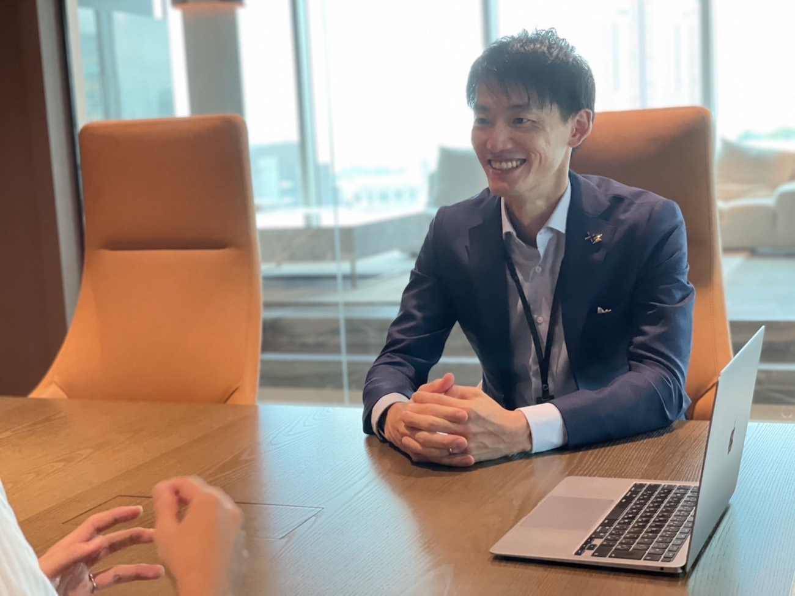

学ぶ
お金の基礎知識から。「わからない」を「わかる」に変える土台づくりを始めます。
大切なのは、その先。基礎知識から長期の資産形成を乗りこなすまで、一生涯つづく伴走で、あなたのお金と人生に寄り添います。
お客さまにとっていちばん良い方法は、時代とともに変わっていくもの。だからこそ、その時々の最適を、一緒に探し続けます。そして始めたあとが本番。伴走型のサポートで、長期にわたって寄り添います。
お金の相談の延長で、生き方や稼ぎ方の話になることもよくあります。そんなときも、遠慮なくお話しください。

代表自身、学びがないことの代償を、身をもって知っています。だからこそ、専門用語を並べる講義ではなく、「わからない」からの出発をいちばん大切にしています。
学びを重ねれば、判断はご自身でできるようになります。そこまでご一緒するのが、私たちの役割です。
はじめての方も、着実に。学びから伴走まで、4つのステップでご一緒します。
お金の基礎知識から。「わからない」を「わかる」に変える土台づくりを始めます。
あなたにとって最適な方法は何か。一緒に考え、納得のいく選択肢を見つけます。
安心して第一歩を。無理のないペースで、長期の資産形成をスタートします。
ここからが本番。生涯にわたって、あなたの資産と人生に寄り添い続けます。
一度きりのアドバイスではありません。日々の暮らしに学びを織り込む、継続のサポートです。
「これってどうなの？」という疑問に、その都度お答えします。聞ける相手がいる安心を。
「この動画を見ておくといいよ」など、役立つ情報を厳選してお届け。
気軽に相談できる距離感で。日常的にやりとりし、いつでも伴走します。
世の中のニュースを深掘りする音声番組を、ほぼ毎日配信。学びを日常にする発信です。

家族にも友人にも切り出しにくいテーマだからこそ、気軽に聞ける距離感を保ちます。「こんなこと聞いていいのかな」を、なくすところから。
「せっかくお繋ぎするなら」——伴走サポートそのものに費用はいただいていません。株式会社知上会の運営は、さまざまなご縁のなかで成り立っています。だから、あなたに寄り添うことに、遠慮はいりません。
お伝えする情報やご紹介も、その多くは無料です。あくまで「あなたにとってベストなもの」を基準にご案内します。
※具体的な条件は、ご相談時にご案内します。
セミナーと、継続的な個別相談は有料です。
無料のアドバイスは、受け取る側もつい聞き流してしまうもの。お互いが本気で向き合うために、いただくべきものはきちんといただく——それが、あなたの資産形成に責任を持つということだと考えています。料金は内容に応じてご案内します。
できることをお伝えするのと同じくらい、しないことをお伝えするのが大切だと考えています。
基準は「その方にとってベストかどうか」だけです。合わないと感じたときは、理由とともにその気持ちを率直にお伝えします。また、お金以外のご相談など範疇外の内容については、他の専門家をご紹介することもあります。
ご相談いただいたからといって、何かを契約していただく必要はありません。ご希望があれば、連絡の頻度もいつでも調整します。
投資には価格変動などのリスクがあり、元本が保証されるものではありません。判断の材料をすべてお渡ししたうえで、最後の選択はご自身に。いずれご自身の力で判断できるようになることが、私たちの目標です。
一人ひとりに合わせた対話を大切にするため、まずはZoomでのオンライン面談から。あなたの状況をうかがったうえで、最適な学びの場をご案内します。
セミナーは有料で開催しています。料金は面談時にご案内します。
まずはオンラインで顔合わせ。お互いを知るところから始めます。
状況や目標にぴったりの内容へ。一人ひとりに寄り添った対話を。
安心できる関係のなかで、深い学びと実践へ進みます。
日々の伴走・連絡、質問への回答、初回のご相談は無料です。一方で、セミナーと継続的な個別相談は有料でご提供しています。また、株式会社知上会の運営は、さまざまなご縁をお繋ぎするなかでも成り立っています。無料・有料にかかわらず、基準はいつも「その方にとってベストかどうか」だけです。
勧誘はいたしません。お話をうかがったうえで合わないと判断すれば、理由とともに率直にお伝えします。ご相談いただいたからといって、何かを契約していただく必要はありません。
まったく問題ありません。代表自身、学びがないことの代償を身をもって知っています。だからこそ「わからない」からの出発を、いちばん大切にしています。
期限はありません。むしろ目指しているのは、いずれ私たちがいなくてもご自身で判断し、歩いていけるようになることです。そのうえで、必要なときにはいつでも戻ってこられる場所であり続けます。
どんな状況の方かがわからないまま一般論をお話ししても、お役に立てないからです。まず一度お顔を合わせて、あなたに合った内容をご用意するための時間をいただいています。セミナーは有料です。料金もこの面談でご案内します。
契約を迫るような連絡はしません。ご希望があれば、連絡の頻度もいつでも調整します。